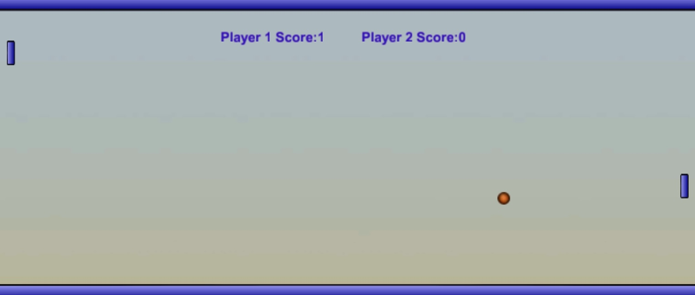

Pong is a 2D game that I developed by using the Unity game engine and the C# programming language. This game is a 2 player game which incorporates assets that are simple but effective to utilise, for when it comes to gameplay. The assets of this game are two rectangular paddles on each side that represent player 1 and player 2, as they are both on opposing sides of the game. In addition, the main asset of the game is the ball which the players will use to score for when it comes to playing the game efficiently. The aim of the game is to beat the opposing player by scoring into their goal and if you reach a score of 30, then you win the game and therefore the opposing player loses.
Ghully007 Gaming


In order to make this game more enjoyable to play with, I incorporated a speed mechanic for the ball and also for the paddles that the players control, in order to play the game. More specifically, each time the ball comes into contact with any of the two paddles, the speed of the ball will get incremented by 1 enabling the game to be more challenging for the players but also enabling the ball to move at a faster rate. In addition, each time the ball comes into contact with any of the two paddles, that paddle's speed also increases gradually whereas the opposing paddle's speed remains the same and will not change, due to the fact that the ball did not come into contact with that paddle. Thus, the speed mechanic for the paddles will give any of the players an advantage over the opposing player. Furthermore, I have also incorporated a boost mechanic within the game, which enables any of the players to add a certain amount of force to the ball, allowing the ball to move at a faster rate and in a different direction, which is a mechanic that can only be utilised once by pressing the 'B' key on the keyboard of a PC/laptop. More so, the speeds of both the ball and paddles get incremented by 1 which enables the speed of the assets to get faster gradually.